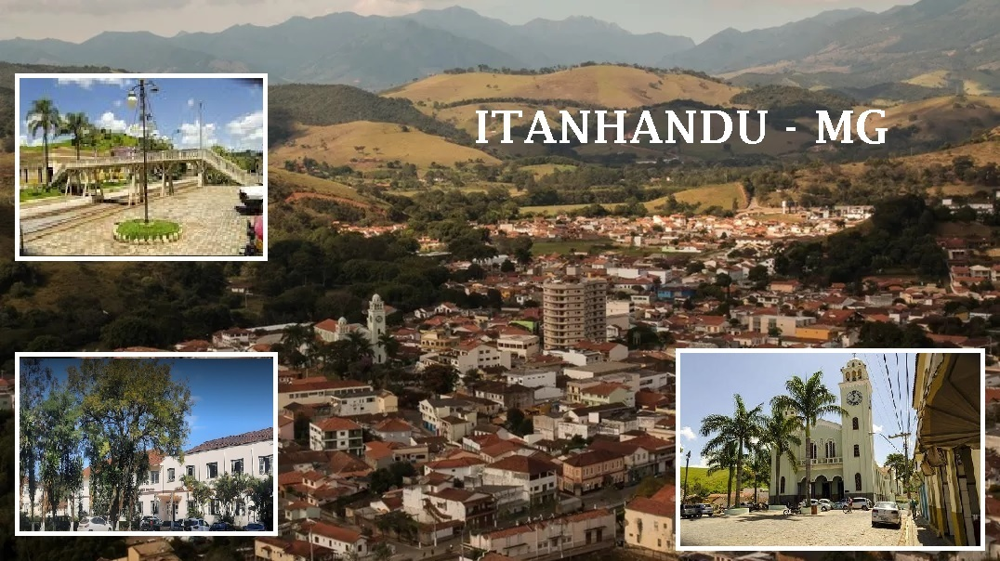
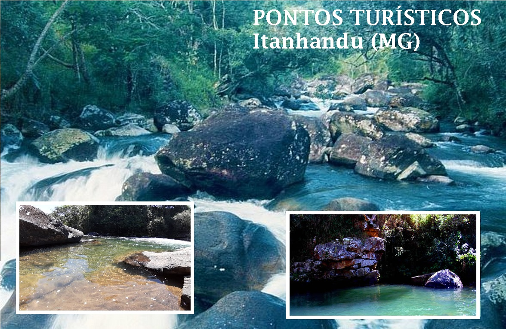

ITANHANDU

SOBRE A CIDADE:
No princípio do século XVIII, Um pequeno aglomerado de casas, circundado por várias fazendas, deu origem ao arraial de Barra do Rio Verde, que se localizava aos pés da Mantiqueira e era banhado pelos rios Verde, Passa Quatro e Ribeirão Itanhandu.
Em 1882 o arraial de Barra do Rio Verde acompanhou a chegada dos ferroviários que iniciaram a construção da estrada de ferro que ligaria o lugarejo aos estados de São Paulo e do Rio de Janeiro e daria acesso a outras cidades mineiras. O tráfego foi inaugurado em 1884 e a nova estação ferroviária denominou-se Capivari, por ser escoadouro do Distrito de Santana do Capivari, integrante do município de Pouso Alto. Depois de Barra do Rio Verde, o arraial passou a ser denominado Estação de Capivari, e, somente em 1904, a população mudou a denominação da localidade para Itanhandu.
O nome Itanhandu, é de origem tupi-guarani e era chamado assim pelos índios Cataguases, porque o Rio Verde forma grandes quantidades de pedras que correm ao longo das Eras(seixos rolados) e significa ITA = pedra; NHANDU = corredeira, riscos,ema ou aranha, favorecendo as seguintes interpretações:pedras que correm ou seixos rolados,pedras riscadas ou seixos raiados,ema na pedra ou ema de pedra, aranha na pedra ou aranha de pedra. Além dessas versões, os antepassados também reconhecem para Itanhandu os significados de pássaro na pedra e, até mesmo, pássaro de pedra, argumentando o fato de haver grande quantidade de pássaros sobre as pedras do Rio Itanhandu.
Em 1911 o arraial Itanhandu passou a Distrito, pertencente ao município de Pouso Alto.
Finalmente em 1923, Itanhandu torna-se município, e no ano 1940 foi elevado a Comarca.
Durante o Ciclo do Ouro, foi caminho de tropas e tropeiros, por onde passavam as riquezas das minas com destino a Coroa, e na década de 30, foi resistência contra a invasão paulista ao território mineiro. Dois futuros presidentes trabalharam no local, o então Cel. Eurico Gaspar Dutra e o Tenente médico Juscelino Kubitschek, que declararia mais tarde a amigos:” Minha carreira política começou em Itanhandu”.
Fonte:
| LOCALIDADES ---- | DISTANCIA EM KM |
| SP --------------------- | 224 km |
| BH --------------------- | 294 km |
| RJ --------------------- | 189 km |
O TURISMO EM ITANHANDU

HINO DE ITANHANDU
Quem não passou no Rio Verde de noitinha, não sabe como é belo Itanhandu.
Tem sombras debruçadas pela estrada enluarada, tem pombas, tico-tico e tem nhambu.
Quem não rezou junto ao altar-mor da capelinha,
Não sabe o que é pecar como eu pequei.
Olhando tanta moça bonitinha e amando tanta gente como eu amei...
Mas nunca o meu Brasil foi tão lindo como aqui, aonde canta triste de manhã a juriti.
E onde a lua branca é como símbolo de paz, que vem abençoar Minas Gerais.
Escute o Hino:
Hino de Itanhandu